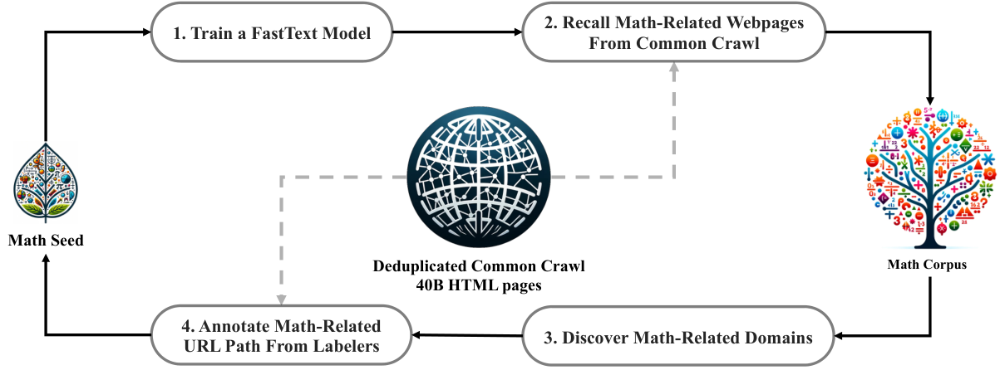
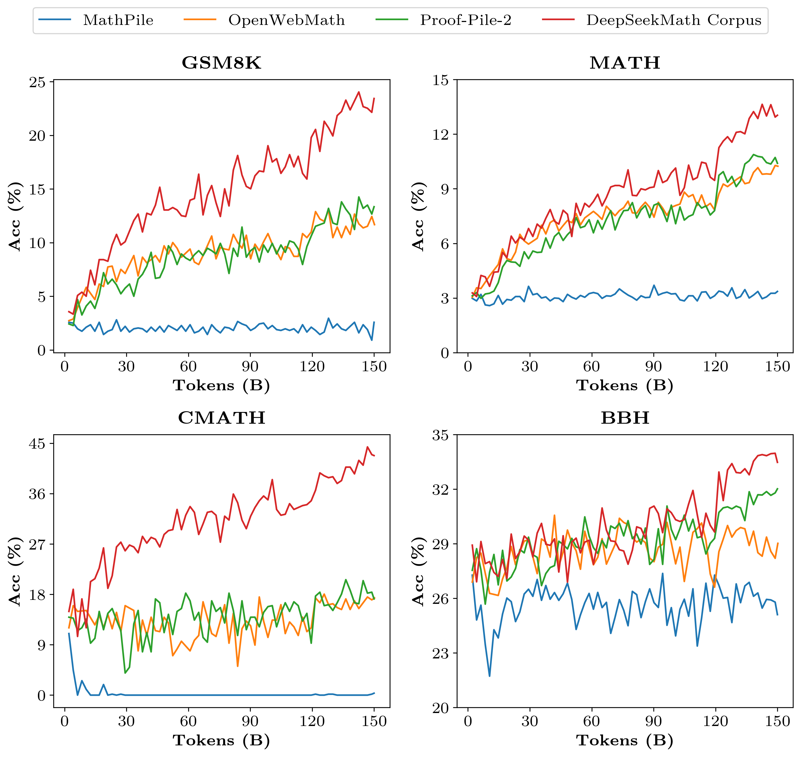
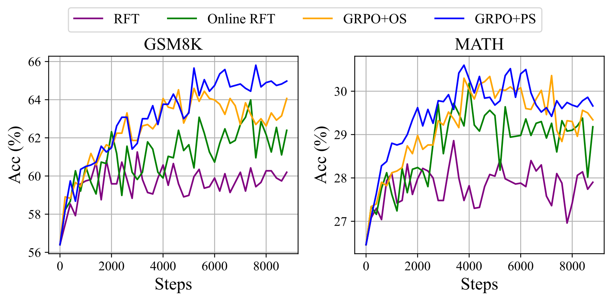

DeepSeekMath：从数学网页挖掘到组相对强化学习¶
用迭代网页召回建立大规模中英数学语料，在代码基座上继续预训练和指令微调，再以同题多回答的相对奖励优化策略，形成 GRPO。
数学能力的瓶颈既包括预训练中能否获得足够高质量的数学知识，也包括生成时能否稳定选中正确解法。DeepSeekMath 将两部分连起来：先从 Common Crawl 迭代挖掘约 120B 数学 token，在代码模型上继续训练 500B token，再用 776K 条中英数学解答做 SFT，最后通过 GRPO 进一步改善回答分布。
7B Base 在 MATH 上达到 36.2%，Instruct 达到 46.8%，RL 后达到 51.7%；允许工具时 RL 为 58.8%。论文的价值还包括完整的数据与算法分析：代码训练的迁移作用、arXiv-only 训练的有限收益，以及在线采样、过程奖励与组相对梯度分别贡献什么。作者也观察到 RL 主要改善多数投票正确率，而没有明显扩大 Pass@K 覆盖，并据此讨论后续探索空间。
摘要、背景与任务划分¶
当时的数学模型包括在专业语料上继续训练的 Minerva／Llemma，以及通过合成解答、过程监督或 RL 改善回答的 WizardMath、MetaMath、ToRA 等路线。本文同时研究预训练、SFT 和 RL，避免把最终提升只归因于单一优化公式。
论文区分三种任务：无工具自然语言 CoT、用 Python 执行的程序／工具整合推理、生成可由证明器检查的形式证明。数值计算题、大学级数学、中文 K-12 与形式化证明的能力并不完全一致，评测因此分别报告。
数学语料：从种子网页扩展到 120B token¶
迭代召回管线¶

图中的关键闭环是：以已知高质量数学网页训练分类器，在大规模网页中召回相似内容，再发现遗漏的数学域名并补充正例。新正例改善下一轮召回的覆盖。
具体过程如下：
- 起始种子采用 OpenWebMath。随机取 500K 种子页面作为正例、500K Common Crawl 页面作为负例，训练 fastText；向量维度 256、学习率 0.1、最大词 n-gram 为 3、最小词频 3、训练 3 epoch。
- Common Crawl 经 URL 与近重复去重后保留约 40B HTML 页面。分类器对页面打分，先比较保留 top 40B／80B／120B／160B token 的预训练效果，首轮选择 top 40B token。
- 以基础 URL 将网页分成域，若某域超过 10% 页面被召回，视为数学相关域；人工标注其中真正的数学 URL 路径，将尚未召回的页面加入正例种子。
- 重新训练 fastText 并召回，最终 4 轮得到 35.5M 网页、约 120B token。第四轮约 98% 已在第三轮出现，因此停止扩展。
这套流程既利用廉价分类器处理规模，也用人工识别数学路径来补充种子多样性。最终语料以英文、中文为主，覆盖多个语言，而非只抓取学术论文。
去污染¶
针对 GSM8K、MATH、CMATH、AGIEval 等测试集，删除含相同 10-gram 的文本；短于 10-gram、至少 3-gram 的测试片段使用精确匹配。去污染覆盖题目和答案，以减少网页中已有标准题解对评测的影响。
语料验证：相同训练预算比较不同数学数据¶
作者在相同 DeepSeek-LLM 1.3B 基座上，分别用数学语料训练 150B token。基线包括 MathPile（8.9B，超过 85% 来自 arXiv）、OpenWebMath（13.6B）与 Proof-Pile-2（51.9B，包含网页、arXiv、数学代码）。小语料在相同预算下会重复多轮。
优化器为 AdamW，\(\beta_1=0.9,\beta_2=0.95\)、weight decay 0.1；4K 上下文，每步 4M token，峰值学习率 \(5.3\times10^{-4}\)。预热 2K 步，在 80%／90% 进度将学习率降至峰值的 31.6%／10%。
原文表 1：不同语料继续训练后的 few-shot CoT 结果。
| Math Corpus | Size | GSM8K | MATH | OCW | SAT | MMLU STEM | CMATH | Gaokao MathCloze | Gaokao MathQA |
|---|---|---|---|---|---|---|---|---|---|
| No Math Training | N/A | 2.9% | 3.0% | 2.9% | 15.6% | 19.5% | 12.3% | 0.8% | 17.9% |
| MathPile | 8.9B | 2.7% | 3.3% | 2.2% | 12.5% | 15.7% | 1.2% | 0.0% | 2.8% |
| OpenWebMath | 13.6B | 11.5% | 8.9% | 3.7% | 31.3% | 29.6% | 16.8% | 0.0% | 14.2% |
| Proof-Pile-2 | 51.9B | 14.3% | 11.2% | 3.7% | 43.8% | 29.2% | 19.9% | 5.1% | 11.7% |
| DeepSeekMath Corpus | 120.2B | 23.8% | 13.6% | 4.8% | 56.3% | 33.1% | 41.5% | 5.9% | 23.6% |
DeepSeekMath Corpus 的 GSM8K 为 23.8%、MATH 为 13.6%，分别高于 Proof-Pile-2 的 14.3%／11.2%；中文 CMATH 为 41.5% vs 19.9%。优势不仅来自更大数据量：原文学习曲线中，在约 50B token、即 Proof-Pile-2 约一轮的数据量处，DeepSeekMath 语料训练的模型也更强。

大规模、较高质量且有中英覆盖的数据，使提升可以持续更久；小语料较早进入重复训练的收益平台。MathPile 在某些中文任务上还低于原始基座，显示数学领域标签本身不足以保证数据适配。
DeepSeekMath-Base：在代码模型上继续预训练¶
基座是 DeepSeek-Coder-Base-v1.5 7B，继续训练 500B token。混合比例为：
| 数据来源 | 比例 |
|---|---|
| DeepSeekMath Corpus | 56% |
| AlgebraicStack 数学代码 | 4% |
| arXiv | 10% |
| GitHub 代码 | 20% |
| 中英 Common Crawl 普通文本 | 10% |
这里的 120B 是数学语料本身的规模，500B 是混合继续训练的 token 预算。最终配置保持 4K 上下文，峰值学习率改为 \(4.2\times10^{-4}\)，batch 为 10M token。
无工具 CoT 主结果¶
原文表 2。OCW 是大学级数学问题，SAT／MMLU-STEM 与高考数学选择题覆盖另一种回答形式。
| Model | Size | GSM8K | MATH | OCW | SAT | MMLU STEM | CMATH | Gaokao MathCloze | Gaokao MathQA |
|---|---|---|---|---|---|---|---|---|---|
| Minerva | 7B | 16.2% | 14.1% | 7.7% | - | 35.6% | - | - | - |
| Minerva | 62B | 52.4% | 27.6% | 12.0% | - | 53.9% | - | - | - |
| Minerva | 540B | 58.8% | 33.6% | 17.6% | - | 63.9% | - | - | - |
| Mistral | 7B | 40.3% | 14.3% | 9.2% | 71.9% | 51.1% | 44.9% | 5.1% | 23.4% |
| Llemma | 7B | 37.4% | 18.1% | 6.3% | 59.4% | 43.1% | 43.4% | 11.9% | 23.6% |
| Llemma | 34B | 54.0% | 25.3% | 10.3% | 71.9% | 52.9% | 56.1% | 11.9% | 26.2% |
| DeepSeekMath-Base | 7B | 64.2% | 36.2% | 15.4% | 84.4% | 56.5% | 71.7% | 20.3% | 35.3% |
DeepSeekMath-Base 的 MATH 为 36.2%，高于 Llemma 34B 的 25.3%，也高于 Minerva 540B 的 33.6%；GSM8K 为 64.2%，CMATH 为 71.7%。OCW 则为 15.4%，仍低于 Minerva 540B 的 17.6%，保留了难度和领域差异。
工具与形式化证明¶
程序辅助任务用 few-shot PoT，让模型写 Python，可调用 math、sympy，以执行结果作答。形式化任务使用 miniF2F：给非形式题目、形式题目及自然语言证明，生成 Isabelle 证明草稿，再交由 Sledgehammer 补足。这不是后来 Prover 系列使用的 Lean 路线。
| 模型 | GSM8K + Python | MATH + Python | miniF2F-valid | miniF2F-test |
|---|---|---|---|---|
| Mistral 7B | 48.5 | 18.2 | 18.9 | 18.0 |
| CodeLlama 34B | 52.7 | 23.5 | 18.5 | 18.0 |
| Llemma 7B | 41.0 | 18.6 | 20.6 | 22.1 |
| Llemma 34B | 64.6 | 26.3 | 21.0 | 21.3 |
| DeepSeekMath-Base 7B | 66.9 | 31.4 | 25.8 | 24.6 |
原文表 3，数字为百分数。数学继续训练也使通用 MMLU 从代码基座的 49.1 到 54.9，BBH 从 55.2 到 59.5；HumanEval 43.2→40.9、MBPP 60.4→52.6，说明代码能力有所回落，保留代码混合缓解而非完全消除了这种取舍。
SFT：把数学知识转成可用解答¶
作者构造 776K 条中英数学指令，包含 CoT、PoT 与自然语言／工具交织的 tool-integrated reasoning。
英文部分为 GSM8K／MATH 标注工具整合解答，并结合 MathInstruct 子集、Lila-OOD 训练集，覆盖代数、概率、数论、微积分、几何等；中文收集 K-12 的 76 个子主题，同时标注 CoT 与工具整合格式。
在 Base 上随机拼接到 4K，batch 256，固定学习率 \(5\times10^{-5}\)，训练 500 步。所得 Instruct 无工具 GSM8K／MATH 为 82.9%／46.8%，工具整合时为 83.7%／57.4%。后文 RL 从此模型继续。
GRPO：用同题相对奖励替代价值模型¶
PPO 中价值模型承担什么¶
PPO 用当前策略与采样旧策略的 token 概率比，乘以优势 \(A_t\)，再通过 clipping 限制过大的更新。传统 LLM PPO 通常还训练一个与策略规模接近的价值模型，以 GAE 估计 token 级优势；只有回答末尾得到分数时，逐 token 价值学习较难，并增加显存和训练成本。

GRPO 对同一个问题采样一组回答，利用组内分数作为相对基线，省去单独的 critic。策略、采样旧策略、参考策略和奖励模型仍有各自职责。
结果监督的优势¶
对问题 \(q\)，由 \(\pi_{\theta_{old}}\) 采样 \(G\) 条回答 \(o_i\)，奖励模型得到 \(r_i\)。组均值和标准差为 \(\bar r\)、\(\sigma_r\)，则：
结果监督下，同一回答全部 token 使用相同优势：分数高于同题平均的回答被相对强化，低于平均的回答被相对抑制。基线来自同题候选，不需要训练每个位置的价值预测。
裁剪策略目标与 KL¶
记 token 概率比为：
论文将 GRPO 写为对组、回答及 token 的平均：
\(\varepsilon\) 限制一次更新的概率比变化，\(\beta\) 控制偏离参考策略的惩罚。旧策略决定这批回答如何采样，参考策略为行为提供约束，二者角色不同。这里每条回答先除以自己的长度，再在组内平均。
与将 KL 混进奖励后再计算优势的写法不同，本文把 KL 直接放入优化目标。其 token 估计为：
概率均对应同一已生成 token 和相同前缀。该表达式非负；本文借它将相对奖励归一化与参考约束分开。
过程监督与迭代 RL¶
结果奖励只有整条回答一个分数。过程监督则在每个推理步骤末尾评分，将组内所有步骤分数归一化后，对位置 \(t\) 累计其后的步骤奖励：
这里 \(\operatorname{index}(j)\) 为第 \(j\) 步的结尾位置，使不同 token 能接收更细的训练信号。
迭代训练进一步更新奖励模型：用当前策略产生新数据，继续训练奖励模型并混入 10% 历史数据回放；在新一轮将参考模型设为该轮起点策略。论文实验进行了两轮迭代，第一轮收益尤其明显。
RL 训练设置与最终模型结果¶
RL 使用 Instruct 起点，问题来自 SFT 中与 GSM8K／MATH 相关的 约 144K 条 CoT 问题。初始奖励模型从 Math-Base 7B 训练，学习率 \(2\times10^{-5}\)；策略学习率 \(10^{-6}\)，KL 系数 0.04，每题采样 64 条，最长 1024 token，batch size 1024，每次探索后只作一次策略更新。
因此，这篇原始 GRPO 的实验包含学习到的奖励模型；答案正确性规则参与奖励训练数据构造。不能把它改写成后来某些纯规则 RLVR 配方。
原文表 5 的主要对照；同一模型的无工具与工具设置分别报告。
| 模型与模式 | GSM8K | MATH | MGSM-zh | CMATH |
|---|---|---|---|---|
| GPT-3.5，CoT | 80.8 | 34.1 | — | 73.8 |
| GPT-4，CoT | 92.0 | 52.9 | — | 86.0 |
| Gemini Ultra，CoT | 94.4 | 53.2 | — | — |
| Qwen 72B，CoT | 78.9 | 35.2 | — | — |
| InternLM2-Math 20B，CoT | 82.6 | 37.7 | — | — |
| DeepSeekMath-Instruct，CoT | 82.9 | 46.8 | 73.2 | 84.6 |
| DeepSeekMath-RL，CoT | 88.2 | 51.7 | 79.6 | 88.8 |
| GPT-4 Code Interpreter | 97.0 | 69.7 | — | — |
| ToRA 34B，工具整合 | 80.7 | 50.8 | 41.2 | 53.4 |
| DeepSeekMath-Instruct，工具整合 | 83.7 | 57.4 | 72.0 | 84.3 |
| DeepSeekMath-RL，工具整合 | 86.7 | 58.8 | 78.4 | 87.6 |
数字为百分数。无工具 MATH 提高 4.9 点，GSM8K 提高 5.3 点。RL 只使用英语 GSM8K／MATH 的 CoT 问题，但中文及工具任务也有提升，为此设置下的域外迁移提供证据。
预训练消融：代码、数学与 arXiv 分别带来什么¶
代码预训练对无工具与有工具推理的影响¶
消融以 1.3B 基座进行，数学数据使用采集第二轮的 89B-token 版本，不同于最终 120B 数据。比较先训练 400B 普通或代码 token、再训练 150B 数学，以及一次性混合训练：
| Training Setting | General | Code | Math | GSM8K | MATH | CMATH | GSM8K+Python | MATH+Python |
|---|---|---|---|---|---|---|---|---|
| No Continual Training | – | – | – | 2.9% | 3.0% | 12.3% | 2.7% | 2.3% |
| Stage 1: General Training | 400B | – | – | 2.9% | 3.2% | 14.8% | 3.3% | 2.3% |
| Stage 2: Math Training | – | – | 150B | 19.1% | 14.4% | 37.2% | 14.3% | 6.7% |
| Stage 1: Code Training | – | 400B | – | 5.9% | 3.6% | 19.9% | 12.4% | 10.0% |
| Stage 2: Math Training | – | – | 150B | 21.9% | 15.3% | 39.7% | 17.4% | 9.4% |
| Math Training | – | – | 150B | 20.5% | 13.1% | 37.6% | 11.4% | 6.5% |
| Code & Math Mixed Training | – | 400B | 150B | 17.6% | 12.1% | 36.3% | 19.7% | 13.5% |
先代码后数学的无工具 GSM8K 为 21.9%，高于先普通文本后数学的 19.1%；带 Python 时也为 17.4 vs 14.3。代码因此不仅帮助调用工具，也改善该实验中的纯 CoT。
混合代码与数学的程序推理更强，GSM8K+Python 达到 19.7%，MATH+Python 13.5%，但纯 CoT GSM8K 为 17.6%，低于分阶段训练。原表 7 还显示，先代码后纯数学会使 HumanEval 从 25.0 掉到 12.2，混合训练则保持 29.3；不同安排需要在数学专门化与代码保留之间取舍。
arXiv-only 并未带来预期收益¶
作者分别让 1.3B 模型训练 150B、7B 代码模型训练 40B 的 MathPile 或 ArXiv-RedPajama。许多题目分数持平或下降：7B 的无数学训练 MATH 为 12.5%，MathPile 后 11.5%，ArXiv-RedPajama 后 11.1%；miniF2F-test 从 **21.7%**分别降到 16.4%／11.9%。
该结论针对这些规模与 arXiv-only 实验。作者没有研究所有专业任务、更大模型以及与其他数据混合后的效果，最终 500B 配方仍含 10% arXiv。正文将结果保留为关于语料适配的经验，而非“学术论文没有用”的普遍结论。
RL 分析：数据来源、梯度权重与覆盖率¶
用同一个梯度框架比较训练方法¶
作者将训练梯度概括为三部分：数据从哪里来、奖励如何定义、算法怎样把奖励变成每个 token 的梯度系数。SFT 用人工筛选数据；RFT 对 SFT 模型生成的正确答案再训练；Online RFT 从更新中的策略实时采样；PPO／GRPO 则进一步按奖励构造正负、不同强度的更新。

在线 RFT 早期接近离线 RFT，后期更强，说明随策略变化更新候选数据有价值。GRPO 又优于 Online RFT：后者只等权强化正确答案，前者可按相对奖励同时强化、抑制，并区分强度。过程监督 GRPO 优于只用结果监督的版本，支持更细粒度信号的收益。
Pass@K 与 Maj@K 回答了不同问题¶

Pass@K 衡量多次采样中是否至少有一次正确，Maj@K 衡量按最终答案多数投票是否正确。作者发现 RL 改善 Maj@K，但没有明显提高 Pass@K，因此将其解释为已有候选空间内的概率分布变得更有利于正确答案。
这促使作者把后续方向放在更广的问题分布、更强探索／搜索、能泛化且表达不确定性的奖励模型，以及对噪声奖励更鲁棒的算法。附录对 SFT、RFT、DPO、PPO、GRPO 的梯度系数逐一推导，使上述比较有统一的数学基础。
结论与局限¶
DeepSeekMath 的完整路线是：高质量网页挖掘 → 代码基座的数学继续预训练 → 多格式中英 SFT → 组相对 RL。公开结果既展示 7B 数学能力的提升，也提供数据选择和后训练收益来源的分析。
作者报告几何与证明题仍较弱，部分三角形、椭圆相关问题失败，可能反映数据选择偏差；few-shot 相较 zero-shot 的收益也弱于 GPT-4。对 RL 而言，当前探索主要在已有 SFT 题目上，奖励模型的泛化与噪声仍限制更广的能力提升。上述问题对应的是后续数据、探索和验证机制需要继续改进的方向。